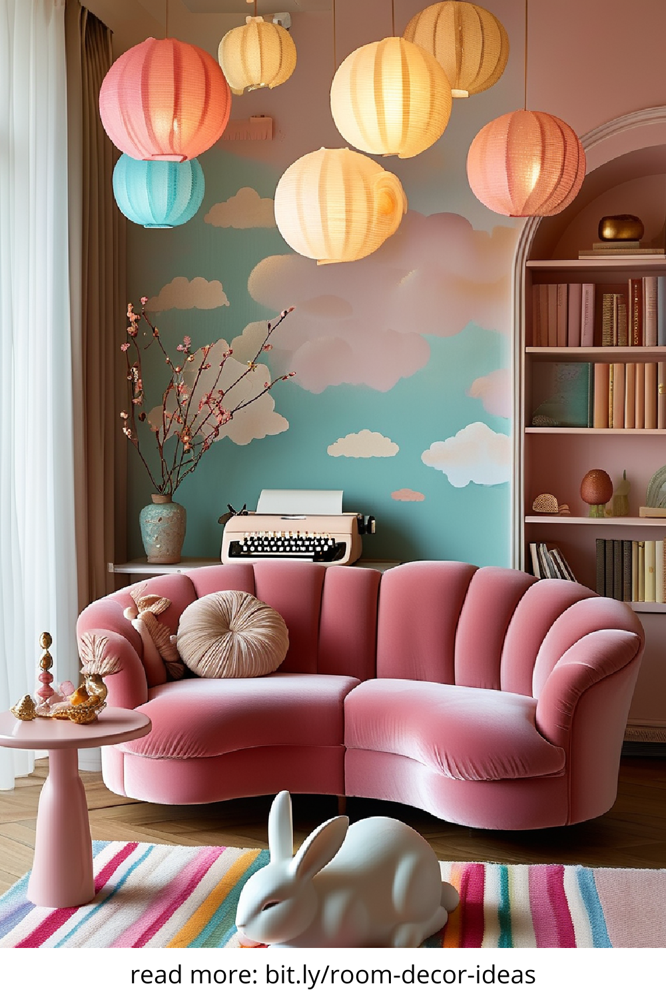
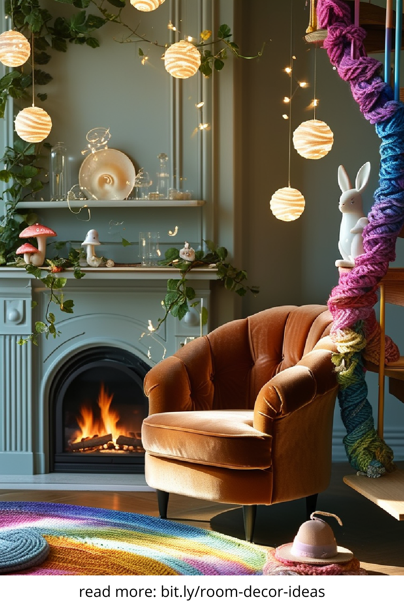
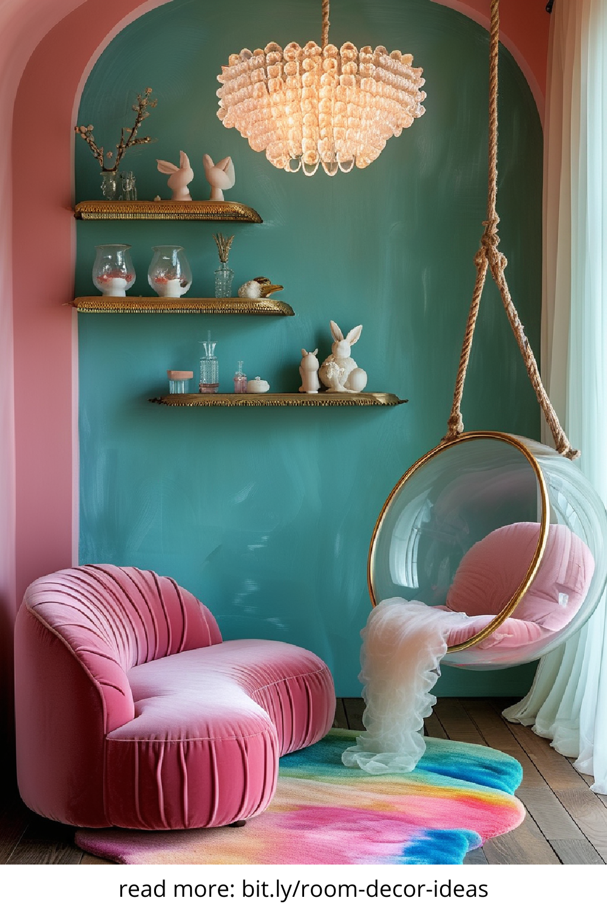
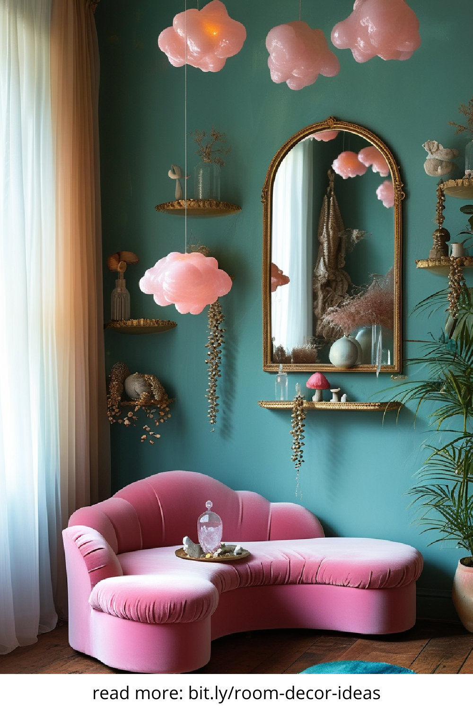

In a world where home interiors often follow predictable trends, whimsical home decor offers a refreshing escape into creativity and charm. From playful color schemes to unexpected design elements, this decor style invites homeowners to embrace their imaginative side. Whether you're revamping a single room or your entire living space, whimsical decor adds character, storytelling, and a touch of magic to everyday life.
Whimsical home decor is a design approach that blends fun, fantasy, and functionality. It embraces bold colors, quirky patterns, and eclectic combinations of vintage and modern elements. Unlike minimalist or traditional styles, whimsical decor thrives on unpredictability and personal expression. Think polka-dotted wallpaper, oversized furniture, fairy lights, and animal-shaped planters. This style encourages homeowners to break design rules and let their personality shine through.
To truly capture the whimsical essence, your space should tell a story. This begins with unexpected color palettes—pastels mixed with neons or jewel tones paired with neutrals. Layering textures like faux fur, velvet, or distressed wood creates visual intrigue. Playful wall art, sculptural lighting fixtures, and statement furniture pieces such as egg chairs or cloud-shaped shelves all contribute to the magic. It’s about balance: too much can feel chaotic, too little might feel incomplete.
Color plays a major role in whimsical home decor. From sunny yellows to lavender purples, combining vibrant shades with softer neutrals helps maintain a cohesive yet playful atmosphere. Don’t be afraid to mix colors traditionally seen as clashing. A mint green couch beside a coral coffee table can become a focal point, while teal and gold accents offer elegance with whimsy. The key is to choose colors that evoke joy, comfort, and curiosity.
Whimsical furniture is where function meets fun. Look for pieces with unconventional shapes or artistic flair. A chair shaped like a hand, a table with curved legs, or a bookshelf that spirals can serve as a conversation starter. Furniture in this style often doubles as art, helping the space feel alive and imaginative. While it’s important to prioritize comfort and usability, don’t shy away from eccentric design choices that bring your space to life.
Accessories are the soul of whimsical home decor. Decorative pillows featuring animals in tuxedos, clocks that melt like in a Salvador Dalí painting, or hanging planters shaped like teacups all add layers of visual storytelling. Use mirrors in unusual shapes, vintage trinkets, and colorful rugs to build depth. These items don’t need to match—they just need to make you smile. This eclectic approach lets your home reflect your interests and sense of humor.
Every room in your home can benefit from a whimsical touch. In the living room, bold art pieces and mix-and-match furniture set a vibrant tone. In the bedroom, fairy lights, canopy beds, and hand-painted nightstands create a dreamy escape. Kitchens can become more joyful with patterned tiles, pastel-colored appliances, or mismatched dining chairs. Even bathrooms can sparkle with rainbow shower curtains and novelty soap dispensers. No space is off-limits.
One of the best parts of whimsical home decor is its openness to DIY. Transform ordinary items into playful accents—a painted ladder can become a bookshelf, or mason jars can double as glowing fairy lanterns. Personal art, hand-sewn pillow covers, or upcycled furniture painted in fun colors allow you to add a unique stamp to your home without breaking the bank. DIY elements bring authenticity and a sense of accomplishment to your whimsical space.
Finding whimsical decor doesn’t require a designer budget. Local thrift stores, flea markets, and online platforms like Etsy, Society6, and Urban Outfitters offer a variety of one-of-a-kind pieces. Look for handmade, vintage, or artist-designed items that stand out. Subscription boxes like Decocrated or ArtSnacks can even bring surprise whimsical elements to your doorstep each month. Curate slowly—each piece should delight and inspire.
Whimsical home decor is more than just a style—it’s a celebration of creativity, individuality, and joy. In a world that often leans toward order and uniformity, embracing a whimsical aesthetic can make your home feel like a true reflection of your personality. Whether you go all-in with bold transformations or start small with quirky accents, let your imagination lead the way. A home filled with wonder is a home that always welcomes you back.
   